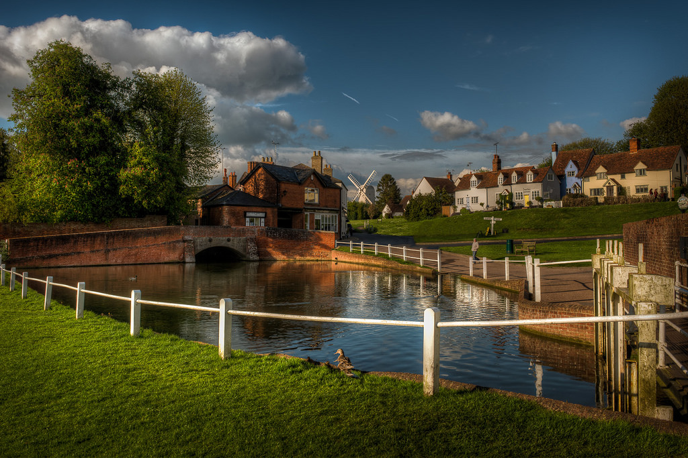
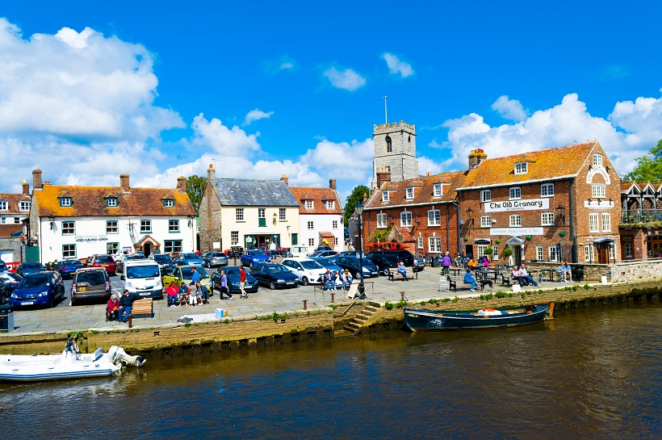
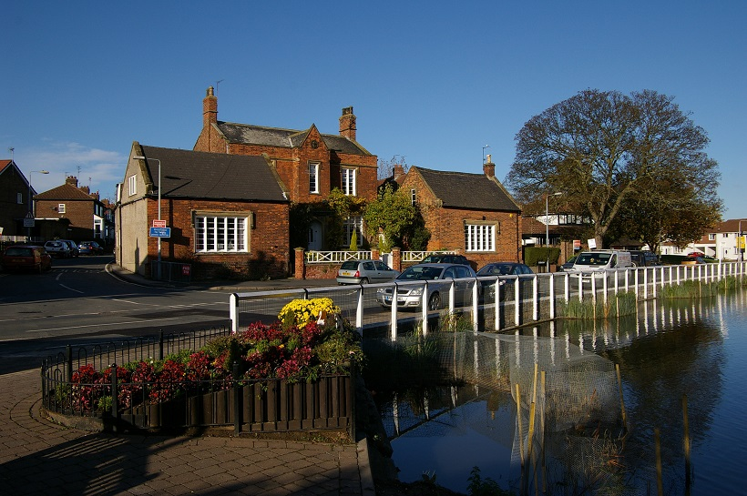
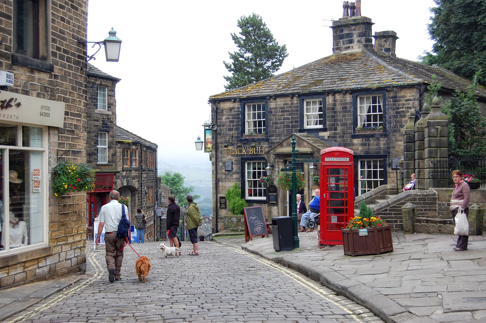

Welcome to the countryside!
There is nothing quite like exploring the English countryside for its amazing rural escapes, which are alluring with dramatic dales, patchwork hills, winding country roads and ancient woodlands. These English countryside destinations are for all seasons
Cheshire
Essex
Dorset
East Yorkshire
Bronte Country

A lot of visitors who are coming to Cheshire have two things in mind, grinning cats and cheese. Do you know that this was James Bond’s star, Daniel Craig’s birthplace? The serene gardens here are delightful and blend perfectly with the sublime collection of stately homes. Come to Cheshire and explore its sweeping vistas, cosy country inns and ‘The Castle on the Rock’ – Beeston Castle and Woodland Park that are set on a hill in this countryside.
Essex is speckled with inspiring villages, picturesque towns and rolling landscapes. There are a lot of country parks, spectacular gardens and over 3,500 miles of byways and public rights of way. This place is perfect for walking and cycling.
It is not only Bronte Country that got flair of writing, come to Dorset which was the world of famous Thomas Hardy’s make-believe world. A large portion of this countryside has been designated as an Area Of Outstanding Natural Beauty. It is also where about 5% of England’s protected ancient monuments are located. Great landmarks in Dorset include the Gold Hill in Shaftesbury, Cerne Abbas Giant, and the hill forts such as Maiden Castle.
This part of England has a lot of chalk streams, hidden valleys, miles of quiet countryside and bustling market towns. Wake up in this unspoilt countryside and search that rabbit that got Lewis Carroll inspired to write Alice in Wonderland at St Mary.
This is one of the most beautiful places in Britain especially Haworth, which attracts thousands of Emily Bronte’s fans to see where some of her novels were set. If you are not a book fan, then the ruined farmhouse and Haworth Moor can be a place for you to be.